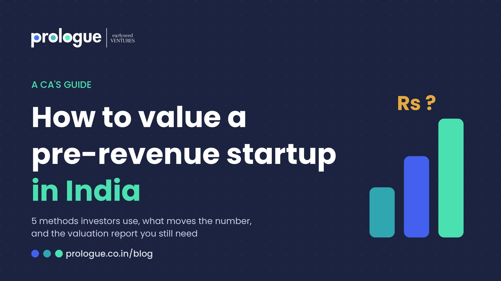
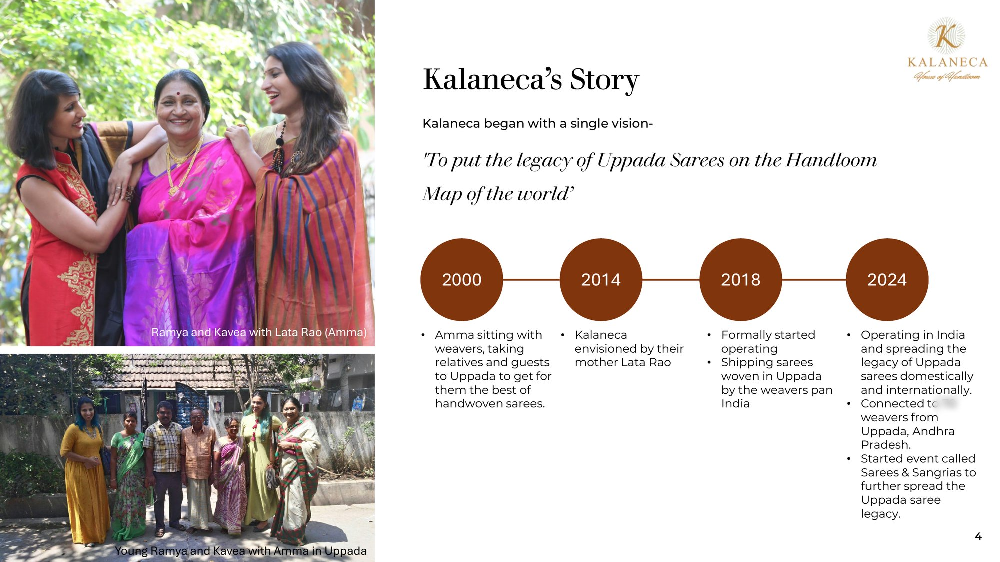

Fundraise Fundamentals: Four Friends
Four friends buy a house. One example explains shares, face value, share premium, and dilution.
Sakshay UpadhyayInvestment Associate at Earlyseed Ventures · 10 min read

How to Value a Pre-Revenue Startup in India
The five methods investors use, what actually moves the number, and why you still need a valuation report after angel tax.
Monica GuptaCo-Founder and CEO, Earlyseed Ventures · 9 min read

What a Startup Pitch Deck Should Look Like
Most pitch decks don't fail because the business is weak. They fail because the story is missing.
Monica GuptaCo-Founder and CEO, Earlyseed Ventures · 5 min read